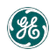

Energi, fortalt med tommelfingeren
Du trykker på kontakten. Strømmen har allerede rejst.
Før lyset tænder, har strømmen været brændsel, kraftværk, elselskab, højspændingsledning og måske et batteri. Følg den i seks korte stop, med rigtige selskaber fra NewDeal Invests energitema undervejs.
Start ved kildenStop 1 af 6
Brændslet: noget skal hentes op
En turbine drejer ikke af sig selv. Den skal have gas at brænde, og en atomreaktor skal have uran, der er beriget. Derfor starter strømmens rejse i en gasboring i Texas eller på et berigningsanlæg i Ohio, længe før nogen taler om kilowatt.
Selskaber på dette stop
Expand EnergyHenter naturgas op i USA
Producerer naturgas i Haynesville og Appalachia. Selskabet er dannet ved en sammenlægning af Chesapeake og Southwestern. Kilde: 10-Q, Q2 2026
 EQTNaturgas i Appalachia
EQTNaturgas i Appalachia
Producerer naturgas i Appalachia. Købet af rørledningsselskabet Equitrans Midstream blev gennemført 22. juli 2024. Kilde: EQT, 22.07.2024
 Kinder MorganFlytter gassen i rør
Kinder MorganFlytter gassen i rør
Driver rørledninger til gas. Gassen skal fra boringen til kraftværket, og det sker i rør. Kilde: NewDeal Invests selskabsdata
 Centrus EnergyBeriger uran til reaktorer
Centrus EnergyBeriger uran til reaktorer
Beriger uran til brændsel på American Centrifuge Plant i Piketon. Berigningen begyndte i slutningen af 2023. Kilde: Centrus, Piketon
Læg mærke til
Brændsel er ikke strøm. En gasproducent sælger gas, og prisen på gassen styrer meget. Hos Expand Energy faldt den opnåede gaspris fra 2,93 til 2,42 dollar pr. Mcf (Q2 2025 mod Q2 2026, før afdækning), og omsætningen faldt, selvom produktionen steg.
Kilde: Expand Energy 10-Q, Q2 2026.
Stop 2 af 6
Kraften: tre måder at lave strøm på
Brænde: gas driver en turbine. Spalte: atomer deles, varmen laver damp, og dampen driver en turbine. Belyse: solceller omsætter lys direkte til strøm, og elektronik omformer den, så elnettet kan bruge den.
Selskaberne her bygger maskinerne. Det er sjældent dem, der ejer kraftværket bagefter.
Brænde

GE VernovaGasturbiner og netudstyr
Gassiden viser turbinerne 9HA, 7HA og LM2500. Selskabet sælger udstyr og service og driver ikke værkerne. Kilde: GE Vernova, gas
 Bloom EnergyBrændselsceller hos kunden
Bloom EnergyBrændselsceller hos kunden
Laver strøm på stedet i brændselsceller. Selskabet skrev 1. april 2025, at cellerne skal bruges på Conagras fabrikker i Troy og Archbold i Ohio. Kilde: Bloom Energy, 01.04.2025
Spalte
 NuScale PowerSmå modulære reaktorer
NuScale PowerSmå modulære reaktorer
Udvikler små modulære reaktorer (SMR). Modulet er en cylinder på 76 gange 15 fod og vejer omkring 700 tons. Det er et design. Kilde: NuScale
 OkloSmå atomkraftanlæg
OkloSmå atomkraftanlæg
Selskabet skrev 6. august 2026, at testreaktoren Groves nåede en kædereaktion ved lav effekt. Det er en test, ikke et kommercielt kraftværk. Kilde: Oklo, 06.08.2026
Belyse
First SolarTyndfilmsmoduler
Laver tyndfilmsmoduler af cadmiumtellurid. Fabrikkerne står i Ohio, Alabama, Louisiana, Indien, Malaysia og Vietnam. Kilde: First Solar
 NextrackerDrejer panelerne efter solen
NextrackerDrejer panelerne efter solen
Laver soltrackere, effektelektronik og styringssoftware til store solparker. Investorkontoret skriver, at selskabet nu hedder Nextpower. Kilde: investors.nextpower.com
 Enphase EnergyMikroinvertere på taget
Enphase EnergyMikroinvertere på taget
Laver mikroinvertere, der omformer strømmen fra solpanelerne. Stiftet i 2006 med hovedkontor i Fremont, Californien. Det er udstyr, ikke et kraftværk. Kilde: Enphase
Læg mærke til
Den, der sælger turbinen, ejer sjældent kraftværket. En ordre på en turbine er ikke det samme som indtægt fra et færdigt kraftværk, og tid, finansiering og tilladelser betyder meget. Spørg altid: hvornår bliver ordren til en leverance og en betaling?
Stop 3 af 6
Elselskabet: her bliver strøm til en regning
Elselskaberne producerer strømmen og fører den ud til hjem, fabrikker og datacentre. Opgaven er en balanceakt: forbrug og produktion skal passe sammen i hvert eneste øjeblik.
Selskaber på dette stop
 Southern CompanyReguleret elselskab i USA
Southern CompanyReguleret elselskab i USA
Reguleret elselskab med atomkraftværket Plant Vogtle. Kilde: Southern Company, Vogtle
 VistraStrøm fra gas og atomkraft
VistraStrøm fra gas og atomkraft
Selskabet skrev 9. januar 2026, at aftaler med Meta dækker 2.176 MW i drift og 433 MW øget effekt. Det er ikke en ny reaktor. Kilde: Vistra, 09.01.2026
 Talen EnergyAtomkraft, kul, gas og olie
Talen EnergyAtomkraft, kul, gas og olie
Producerer strøm i USA. Susquehanna er selskabets atomkraftværk, og siden skriver, at Brandon Shores kører videre efter en planlagt lukning. Kilde: Talen, portefølje
Læg mærke til
Ny aftale er ikke det samme som ny strøm. I Vistras aftaler med Meta handler 2.176 MW om værker, der allerede kører, og 433 MW om øget effekt.
Stop 4 af 6
Nettet: den lange ledning
Strømmen kører på højspænding over lange afstande og bliver trappet ned i transformerstationer, før den når din gade. Nettet skal bygges, vedligeholdes og styres, og det er ofte tre forskellige selskaber.
Selskaber på dette stop
 Quanta ServicesBygger og vedligeholder elnet
Quanta ServicesBygger og vedligeholder elnet
West Fort McMurray omfatter over 310 miles 500 kV-ledning og stationerne Livock og Thickwood Hills. Hovedsædet ligger i Houston. Kilde: Quanta, elnet
 MYR GroupElektriske anlæg i USA og Canada
MYR GroupElektriske anlæg i USA og Canada
Bygger elektriske anlæg i USA og Canada. Kilde: MYR Group
 Tantalus SystemsSoftware til distributionsnettet
Tantalus SystemsSoftware til distributionsnettet
Laver en platform til elselskabernes distributionsnet, med produkter som TRUConnect og TRUGrid. Selskabet driver ikke nettet. Kilde: Tantalus
 Shoals TechnologiesSamler strømmen i solparker
Shoals TechnologiesSamler strømmen i solparker
Tegner og fremstiller eludstyr, som samler strømmen i solparker, batterilagring og datacentre. Det er udstyr, ikke et kraftværk. Kilde: Shoals
Læg mærke til
Bygger, ejer, driver: tre forskellige roller. Den, der bygger ledningen, ejer den ikke nødvendigvis, og den, der leverer softwaren, driver ikke nettet.
Stop 5 af 6
Lageret: strøm, der venter
Solen skinner ikke om natten, og forbruget topper ikke, når produktionen gør. Batterier gemmer strømmen og afleverer den igen, og reservegeneratorer tager over, når nettet svigter.
Selskaber på dette stop
 Fluence EnergyBatterisystemer til elnettet
Fluence EnergyBatterisystemer til elnettet
Leverer batterisystemer og software, der lagrer strøm på elnettet og afleverer den igen. Siden nævner platformen Smartstack, men siger ikke, at selskabet selv laver cellerne. Kilde: Fluence
 Eos EnergyZinkbatterier til elnettet
Eos EnergyZinkbatterier til elnettet
Fremstillingen af Z3 begyndte i august 2023 på Eos Ingenuity Park i Turtle Creek, Pennsylvania. Kilde: Eos, fremstilling
 GeneracReservestrøm
GeneracReservestrøm
Fremstiller reservegeneratorer og er stiftet i 1959. Kilde: Generac
 QuantumScapeFaststofbatterier under udvikling
QuantumScapeFaststofbatterier under udvikling
QS PowerBlock blev præsenteret 8. oktober 2026 som et referencedesign til lagring i datacentre. Det er ikke et lager i drift. Kilde: QuantumScape, 08.10.2026
Læg mærke til
Et batteriselskab kan være meget forskellige ting: systemer på elnettet (Fluence), egne celler i fabrik (Eos) eller teknologi, der stadig er på udviklingsstadiet (QuantumScape). Spørg, hvilket af dem du læser om.
Stop 6 af 6
Stikkontakten: når rejsen bliver kort
Den klassiske rejse er lang: brændsel, kraftværk, net, hjem. Men flere selskaber i temaet laver strømmen lige ved siden af den, der bruger den. Det gælder især datacentre, og det gælder hustage.
Ved datacentret
 ErockLokal strøm fra gas
ErockLokal strøm fra gas
Leverer lokal strøm fra gas til datacentre. Kilde: NewDeal Invests selskabsdata
 Solaris Energy InfrastructureStrøm tæt på store forbrugere
Solaris Energy InfrastructureStrøm tæt på store forbrugere
Leverer strømproduktion og fordeling tæt på store forbrugere. Selskabet skrev 6. juli 2026, at det har købt GESA, som er service til kraftværker. Kilde: Solaris, 06.07.2026
 FermiOmråde til energi og datacentre
FermiOmråde til energi og datacentre
Udvikler et område til energi og datacentre i Texas. Kilde: NewDeal Invests selskabsdata
I hjemmet
 SunrunSol og batteri til boliger
SunrunSol og batteri til boliger
Leverer solservice og batterier til boliger. 4,6 GWh tilknyttet lager er opgjort pr. 30. juni 2026. Kilde: Sunrun, investorkontor
 ShellySmarte relæer til hjemmet
ShellySmarte relæer til hjemmet
Laver smarte relæer og enheder til hjemmet: det sidste led, hvor strømmen bliver tændt og slukket. Kilde: NewDeal Invests selskabsdata
Læg mærke til
Kæden kan blive kort. Når strømmen laves på stedet, med brændselsceller eller gas ved datacentret eller sol og batteri på taget, springer man dele af rejsen over. Det flytter, hvem der bygger, ejer og tjener på hvert led.
Læsenøglen
Fem ord, der snyder i energinyheder
Undervejs har du mødt de samme fælder igen og igen. Her er de samlet. Tryk på et ord for at se, hvad det dækker over, med et eksempel fra rejsen.
Kapacitet“Fabrik på 5 GW om året”
Kapacitet er, hvad et anlæg kan lave. Det er ikke, hvad det faktisk lavede i et år.
T1 Energy sætter fabrikken G1_Dallas til 5 GW solcellemoduler om året. Det er kapacitet, ikke et målt år.
Aftale“Brændselsceller skal forsyne fabrikker”
En aftale siger, hvad der skal ske. Den siger ikke, at det allerede kører.
Bloom Energys aftale om Conagras fabrikker i Ohio er en aftale. Teksten siger ikke, at cellerne allerede kører.
Design“Lille reaktor på 700 tons”
Et design er en tegning med tal på. Det leverer ingen strøm, før det er bygget, godkendt og tændt.
NuScales modul er et design, ikke et værk i drift. Oklos Groves er en testreaktor, ikke et kommercielt kraftværk.
Ordre“1,2 GW til datacentre”
En ordre er en lovet leverance. Indtægten kommer først, når arbejdet bliver udført, og det kan tage år.
Babcock & Wilcox' meddelelse af 4. marts 2026 gælder 1,2 GW for Base Electron, som skal eje anlæggene. Ifølge 10-Q er kommerciel drift tidligst planlagt i 2030.
Tæller“Den 250.000. inverter”
Et løbende tal over mange år ser stort ud, men siger ikke, hvor meget der sker i dag.
SolarEdges 250.000. inverter hos Flex i Austin (2. juni 2025) er en tæller, ikke et årstal. Canadian Solars næsten 180 GW moduler er leveret over 25 år.
Prøv dig selv: tre hurtige
Svar med tommelfingeren. Alle svar står et sted på rejsen.
1. Driver NuScale et kraftværk med sit reaktormodul i dag?
2. Ejer Quanta 500 kV-ledningen i projektet West Fort McMurray i Alberta?
3. Har Plant Vogtle fire enheder i drift ifølge Southern Company?
Det tager du med
- Strømmen har et forløb: brændsel, kraft, elselskab, net, lager og stikkontakt. Hvert led har sine egne selskaber og sine egne risici.
- Den, der bygger, er sjældent den, der ejer eller driver. Find ud af, hvilken rolle selskabet har.
- Læs ordene præcist: kapacitet, aftale, design, ordre og tæller er ikke det samme som strøm, der leveres i dag.